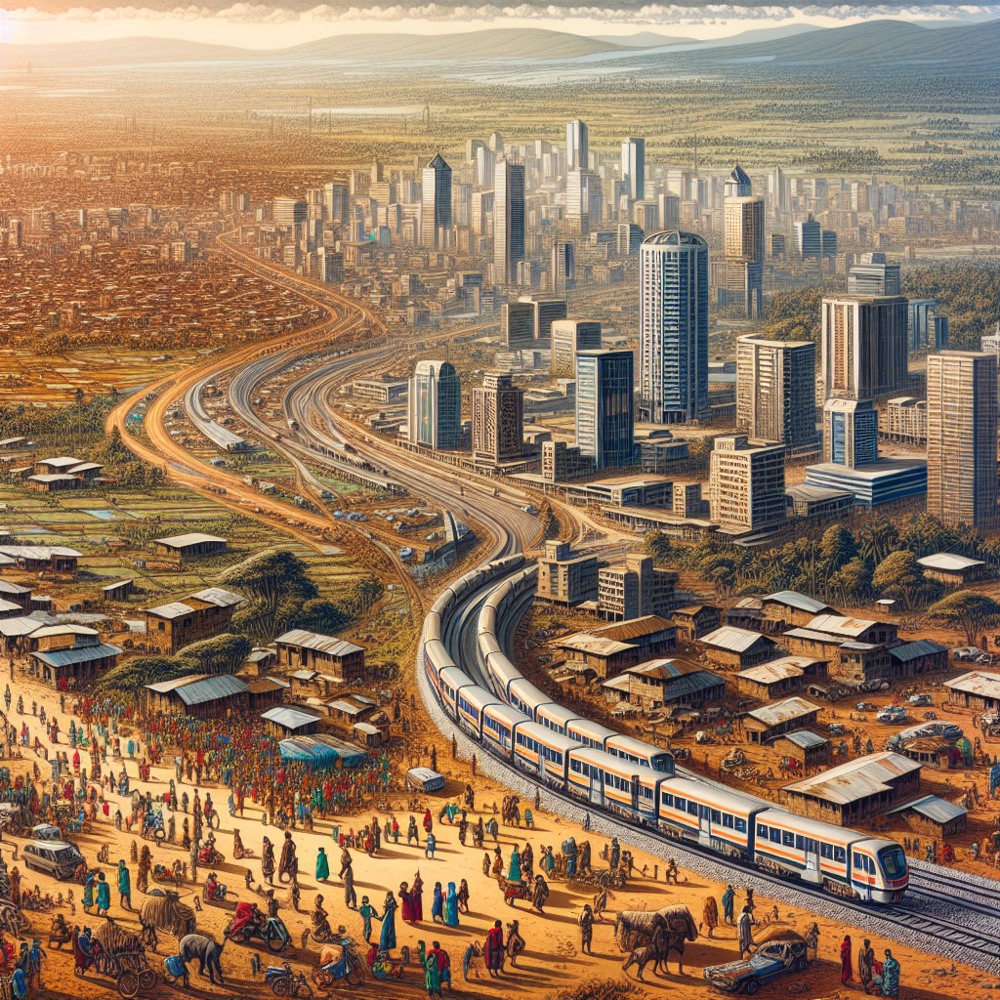
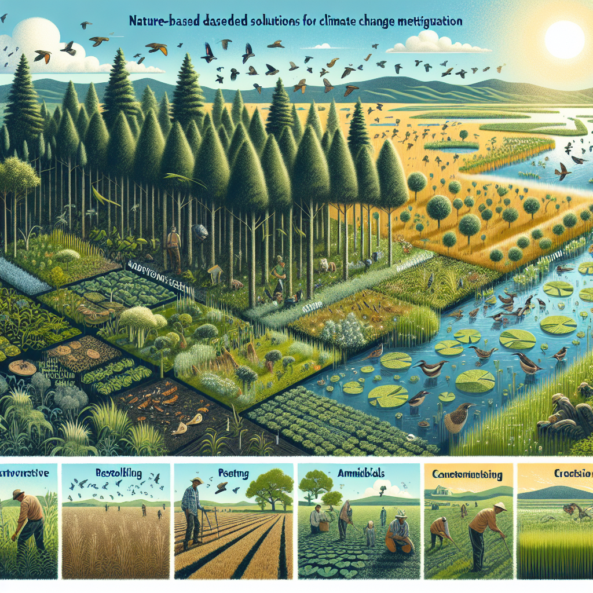

Abstract
Climate change presents a significant and multifaceted threat to the well-being and prosperity of Kenyan cities. Rising temperatures, erratic rainfall patterns, extreme weather events, and rising sea levels pose immense challenges to urban infrastructure, water security, public health, and overall sustainability. This paper delves into the concept of climate change resilience in urban planning for Kenyan cities, emphasizing the critical need for proactive adaptation strategies. It explores the inherent vulnerabilities of urban areas, particularly informal settlements, and underscores the importance of integrating climate considerations into urban planning frameworks. Based on the relevant literature and peer reviewed articles including drawing on detailed case studies from Nairobi and other Kenyan cities, the paper discusses key adaptation strategies such as green infrastructure, improved drainage systems, nature-based solutions, and community-based adaptation initiatives. It further highlights the crucial role of robust governance, financial resources, and community engagement in ensuring the successful implementation of these strategies.
Introduction.
Urbanization in Kenya is rapidly transforming the landscape, with cities like Nairobi experiencing exponential population growth. However, this growth occurs against the backdrop of a rapidly changing climate, posing significant challenges for urban planning and development. Climate change is projected to exacerbate existing vulnerabilities in Kenyan cities, leading to:
i. Increased frequency and intensity of extreme weather events
According to Lwasa in his article “Adapting urban areas in Africa to climate change” Floods, droughts, heatwaves, and storms are expected to become more frequent and severe, causing widespread damage to infrastructure, livelihoods, and human life (Lwasa, 2010).
ii. Water scarcity
This will be due toerratic rainfall patterns and rising temperatures will likely lead to water shortages, jeopardizing access to clean drinking water and sanitation for urban populations.
iii. Sea-level rise
Coastal cities like Mombasa face the threat of inundation and salinization of freshwater sources due to rising sea levels, posing significant risks to coastal communities and infrastructure (Leal Filho et al., 2019).
iv. Increased health risks
The spread of vector-borne diseases such as malaria and dengue fever is expected to worsen due to warmer temperatures and increased flooding (Baker, 2012).
These challenges disproportionately impact vulnerable populations, particularly those residing in informal settlements with limited access to basic services, infrastructure, and financial resources. Building climate resilience in Kenyan cities requires a proactive and multi-pronged approach that integrates adaptation strategies into urban planning frameworks.

Understanding Urban Vulnerabilities
Informal settlements are particularly susceptible to climate change impacts due several factors such as
a) Location
These settlements are often situated in floodplains, low-lying areas, or on steep slopes, making them highly vulnerable to flooding, landslides, and other hazards.
b) Poor infrastructure
Lack of proper drainage systems, sanitation facilities, and flood defenses heightens vulnerability during extreme weather events (Wanjohi, 2018).
c) Limited access to resources
Residents often lack the financial means to invest in adaptation measures or relocate to safer areas, further exacerbating their vulnerability (Chirisa et al., 2016).
Case studies like Mathare Valley in Nairobi illustrate the devastating consequences of inadequate infrastructure during extreme weather events. Floods regularly cause loss of life, damage property, and disrupt livelihoods thus highlighting the urgent need for targeted adaptation strategies in these vulnerable communities (Baker, 2012).
.png)
Adaptation Strategies for Kenyan Cities
Several key adaptation strategies can be implemented to enhance the resilience of Kenyan cities
1) Green infrastructure
This involves utilizing green spaces, parks, bioswales, and rain gardens can significantly improve stormwater management, reduce flooding risks, and enhance urban air quality. Nairobi’s “Komb Green Solutions” project serves as a prime example, demonstrating the effectiveness of green infrastructure in creating multifunctional spaces that address both environmental and social needs (Frontiers, 2022).
2) Improved drainage systems
This could be achieved by upgrading drainage infrastructure to handle increased precipitation and prevent flooding, especially in flood-prone areas, is crucial for protecting communities and infrastructure.
3) Climate-proofing critical infrastructure
This would involve protecting essential infrastructure like water supply systems, transportation networks, and healthcare facilities from climate hazards is vital for ensuring the continued functioning of vital services during extreme events.
4) Nature-based solutions
This can be achieved by utilizing mangroves, coastal vegetation, and coral reefs can buffer against sea-level rise and storm surges in coastal cities like Mombasa. These natural defenses provide cost-effective and sustainable solutions for protecting coastal communities and infrastructure.
5) Early warning systems
This can be realized by Implementing effective early warning systems to alert communities about impending weather events and facilitate timely evacuation is crucial for minimizing loss of life and property damage.
6) Community-based adaptation
This would involve engaging local communities in identifying vulnerabilities, developing adaptation plans, and implementing low-cost solutions is essential for ensuring effective and sustainable adaptation strategies. Initiatives like Mombasa’s Participatory Climate Change Adaptation Appraisal (PCCAA) demonstrate the power of community-based approaches (Moser & Stein, 2011).

The Role of Urban Planning in Building Resilience
Urban planning plays a critical role in building climate resilience by:
i. Conducting comprehensive vulnerability assessments byIdentifying areas and populations most at risk from climate change impacts is crucial for prioritizing adaptation efforts and allocating resources effectively.
ii. Integrating climate considerations into planning frameworks for instanceSpatial plans should prioritize green infrastructure, flood defenses, and climate-resilient development patterns to ensure long-term sustainability and minimize future risks (Cobbinah, 2021).
iii. Promoting inclusive and participatory planning throughensuring that the voices and needs of vulnerable communities are incorporated into decision-making processes is essential for developing equitable and effective adaptation strategies (Bulkeley & Tuts, 2013).
Challenges and Opportunities
Implementing successful adaptation strategies requires overcoming several significant challenges:
a) Limited financial resources
Kenyan cities often lack the necessary financial resources to invest in large-scale adaptation projects, hindering the implementation of critical infrastructure upgrades and green infrastructure initiatives.
b) Institutional capacity constraints
Strengthening institutional capacity within government agencies is crucial for effective planning, implementation, and monitoring of adaptation measures. This requires training and capacity building for relevant personnel to ensure effective management of climate change adaptation initiatives.
c) Social and political barriers
Addressing competing priorities, ensuring equitable access to resources, and navigating political complexities can hinder progress towards achieving comprehensive and inclusive climate adaptation goals.
Despite these challenges, opportunities exist to leverage existing strengths and build resilience:
i. Existing community initiatives
By building upon the knowledge and resourcefulness of communities already engaged in adaptation efforts can provide valuable insights and contribute to the development of locally relevant solutions (Kithiia, 2009).
ii. International collaboration
This involvesaccessing technical expertise, financial support, and knowledge-sharing opportunities through international partnerships can significantly enhance the capacity of Kenyan cities to implement effective adaptation strategies.
iii. Mainstreaming climate change into development policies
This involvesintegrating climate resilience into national and local development plans ensures a comprehensive and coordinated approach to addressing climate change challenges across various sectors. This requires strong political commitment and a clear vision for a climate-resilient future (Oyugi, 2023).
Case Studies
Nairobi, the capital city of Kenya, provides a microcosm of the challenges and opportunities faced by Kenyan cities in building climate resilience. The city experiences frequent flooding, water scarcity, and heatwaves, disproportionately impacting vulnerable populations residing in informal settlements. However, Nairobi has also undertaken several initiatives to address these challenges, including:
1) Green infrastructure projects
The “Komb Green Solutions” project, mentioned earlier, is a prime example. Additionally, the Nairobi River Basin Management Authority is working to restore the Nairobi River and its riparian zones, creating green spaces that manage storm water runoff and improve urban ecology.
2) Improved drainage systems
The Nairobi Metropolitan Services has initiated projects to upgrade drainage infrastructure in flood-prone areas, aiming to reduce flooding risks and protect communities.
3) Community-based adaptation
Some organizations like the Mazingira Institute are working with communities in informal settlements to raise awareness about climate change risks, develop local adaptation plans, and implement low-cost solutions like rainwater harvesting and flood early warning systems.
Beyond Nairobi, cities like Mombasa are actively pursuing adaptation strategies specific to their coastal vulnerabilities. The Mombasa Action Plan on Climate Change outlines a comprehensive approach that includes:
a) Nature-based solutions which involvesUtilizing mangroves and coral reefs for coastal protection against sea-level rise and storm surges.
b) Improved sanitation and waste management byaddressing pollution and reducing the risk of waterborne diseases exacerbated by climate change.
c) Strengthening social safety nets by supporting vulnerable communities and ensuring their access to essential services during and after climate-related disasters.
These case studies highlight the importance of tailoring adaptation strategies to the specific vulnerabilities of each city while drawing inspiration and knowledge from successful initiatives implemented elsewhere.
Conclusion
Building climate resilience in Kenyan cities requires a multifaceted approach that combines strategic urban planning, targeted adaptation strategies, and robust governance. Prioritizing green infrastructure, improving drainage systems, and empowering communities are crucial steps towards safeguarding vulnerable populations and ensuring the long-term sustainability of Kenyan cities in the face of climate change. By acknowledging the challenges and capitalizing on existing opportunities, Kenyan cities can build a more robust and equitable urban environment that is prepared to withstand the challenges posed by a changing climate.
Recommendations
i. Conduct comprehensive vulnerability assessments by Identifying specific climate risks and tailor adaptation strategies accordingly.
ii. Develop and implement integrated climate action plans so as to prioritize green infrastructure, improved drainage systems, and nature-based solutions within urban planning frameworks.
iii. Strengthen institutional capacity in order toinvest in training and capacity building for government officials and stakeholders involved in climate adaptation initiatives.
iv. Secure adequate financial resources by exploring innovative financing mechanisms, such as public-private partnerships and international climate funds, to support adaptation projects.
v. Foster community engagement byactively involve local communities in decision-making processes, knowledge sharing, and implementation of adaptation strategies. This ensures that solutions are culturally relevant, address specific needs, and promote community ownership.
vi. Promote research and innovation byEncouraging research into climate-resilient technologies and adaptation strategies suitable for the Kenyan context. This can provide valuable insights for developing effective and cost-efficient solutions.
vii. Build partnerships and networks byCollaborating with national and international organizations to share best practices, access technical expertise, and leverage collective resources. This fosters knowledge exchange and strengthens the capacity for climate action across different scales.
References
Baker, J. (2012). The impact of climate change on human health in Africa. Transactions of the Royal Society of Tropical Medicine and Hygiene, 106(10), 640-652.
Bulkeley, H., & Tuts, R. (2013). Equity and justice in climate change adaptation: Letting down the vulnerable. Regional Environmental Change, 13(4), 831-840.
Chirisa, I., Mutengu, K., & Mavhunga, P. (2016). Climate change vulnerability and adaptation in informal settlements in Africa: A case study of Harare, Zimbabwe. Journal of Environmental Planning and Management, 59(12), 2055-2077
Cobbinah, P. B. (2021). Integrating climate change adaptation into urban planning in Africa: A review of approaches, challenges, and opportunities. Sustainability, 13(18), 10306. https://doi.org/10.3390/su131810306
Frontiers. (2022, April 22). Komb Green Solutions: A people’s park for a climate-resilient Nairobi. frontiersin.org. Retrieved October 27, 2023, from
Kithiia, J. M. (2009). Community-based adaptation to climate change: A case study of nine villages in semi-arid Kenya. Environmental Management, 44(1), 209-225.
Leal Filho, W., Nalbantis, D., & Filho, W. L. (2019). Vulnerability of coastal communities to climate change in Africa: A review. Mitigation and Adaptation Strategies for Global Change, 24(1), 7-32.
Lwasa, S. (2010). Vulnerability to climate change in African cities: A case study of Dar es Salaam, Tanzania. Current Opinion in Environmental Sustainability, 2(1), 16-25. https://doi.org/10.1016/j.cosust.2010.02.002
Moser, C., & Stein, A. (2011). The social aspects of vulnerability to climate change: A scoping report. Tyndall Centre for Climate Change Research, University of East Anglia.
Oyugi, A. (2023). Mainstreaming climate change into development policy in Kenya: A review of progress and challenges. Climate Policy, 23(4), 505-522.
Wanjohi, G. (2018). Urbanization and climate change in Africa: Challenges and opportunities for adaptation. Planning for Climate Change, 1-22.